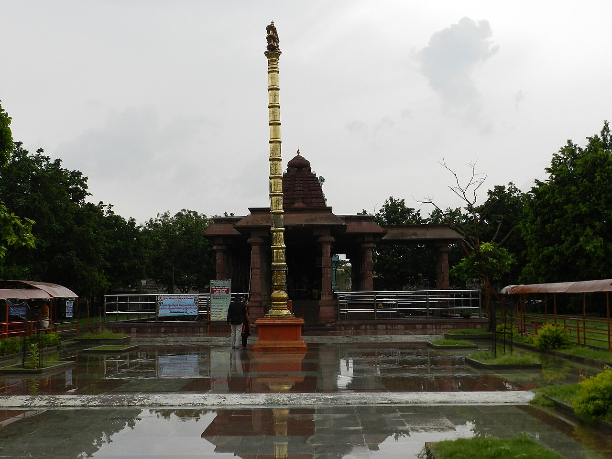

Wikimedia Commons · CC BY-SA 3.0 ⇗
Sthala Puranam
Alampur, on the banks where the Tungabhadra joins the Krishna, is the seat of Jogulamba, one of the great Shakti Peethas of the Deccan. The site is famous both for the Goddess and for the cluster of early Chalukyan temples called the Navabrahma temples that surround a pond called Bala Brahma Kunda.
Explanation
The Yogini tradition names this Peetha the Yogini Peetham; the portion of Sati associated with the seat is the teeth (or jaws). Jogulamba is a Yogini Goddess, fierce of aspect yet compassionate to her devotees. Adi Shankara is believed to have established a Sri Chakra here. The outer wall of the goddess's temple carries reliefs of the Nava Durgas and the Sapta Matrukas, marking Alampur as a stronghold of both Shaiva and Shakta sadhana at the confluence of the two rivers.
Why the temple is revered
Jogulamba is revered as the wrathful yet motherly Goddess of the Deccan, celebrated in the Shakti Peetha stotrams of the region. Pilgrims hold the Bala Brahma kund sacred and believe a dip in its waters, taken while venerating the Navabrahma temples, washes away accumulated suffering. During Navaratri the shrine draws thousands.
🕉 Story
Jogulamba is revered as a powerful form of Goddess Shakti. Alampur has long been an important Shaiva-Shakta sacred centre.
✨ Significance
The temple forms an important part of the sacred geography around the Tungabhadra and Krishna river region.